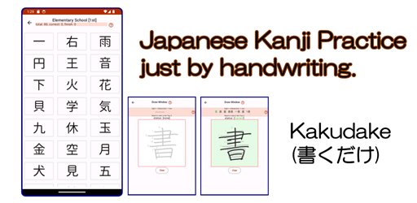

|  |
|
Japanese Kanji Practice just by handwriting. Common-use kanji (常用漢字), 2,136 words are supported. Words are categorized by school and grade. You can select the category that you would like to. You can practice writing a word 3 times. The App recognizes your writing automatically, and checks if your writing is correct, and changes the word status. This app uses the machine learning Library to recognize handwritten text. The library needs to download the recognition model to recognize Japanese. Around 20MB of storage is required. |